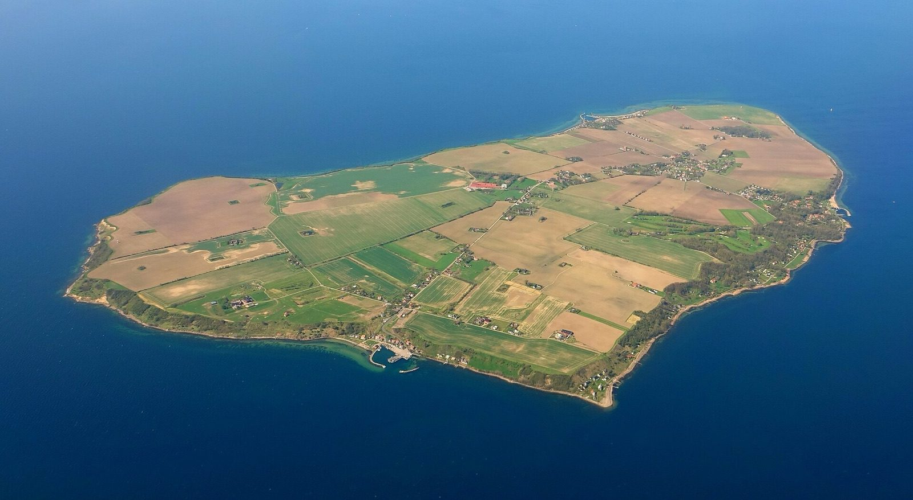
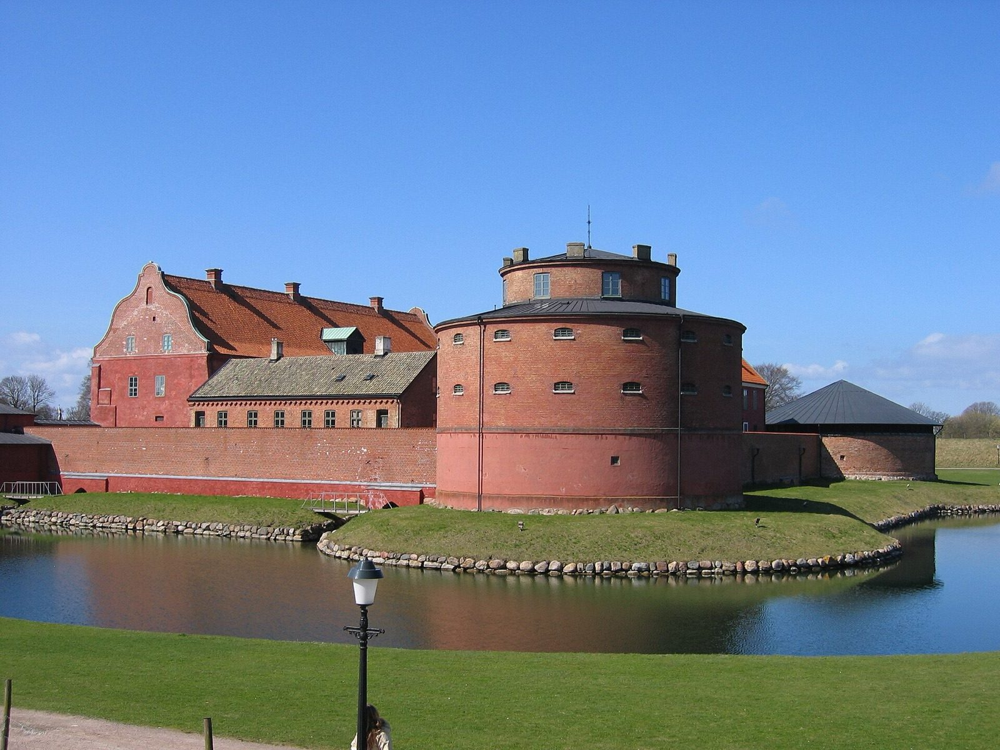
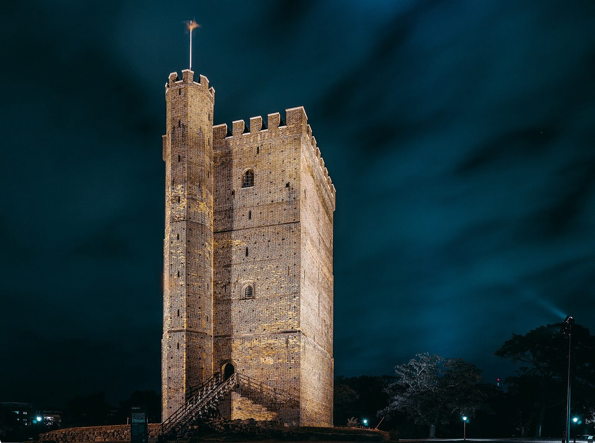
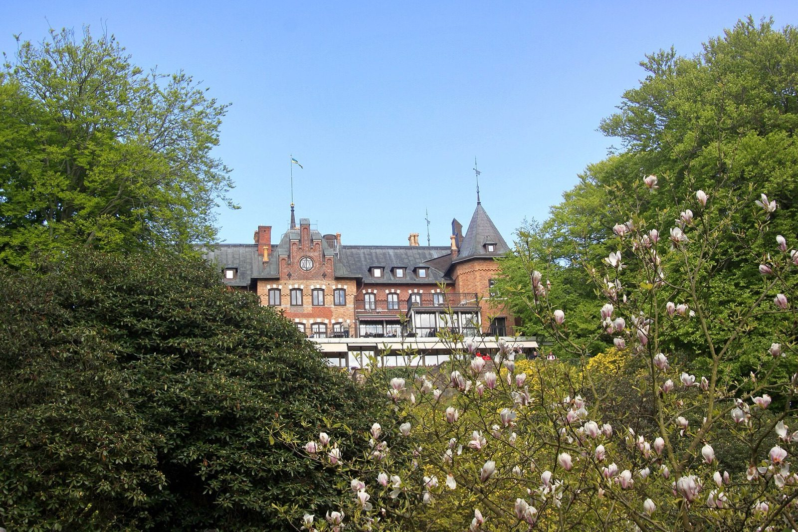
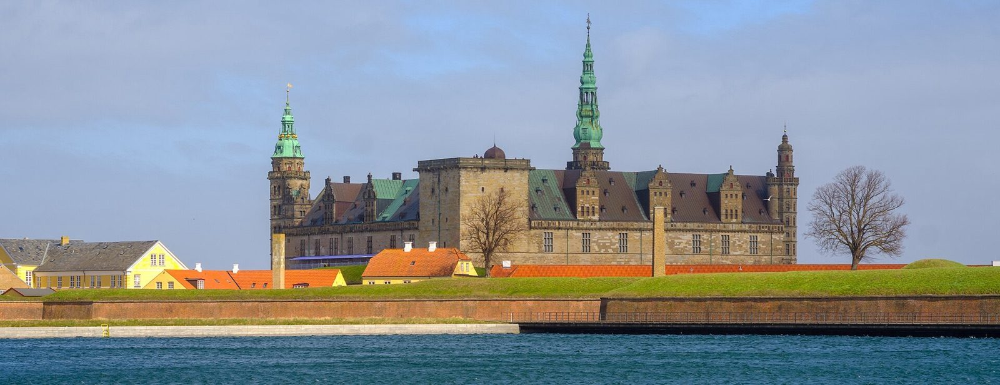
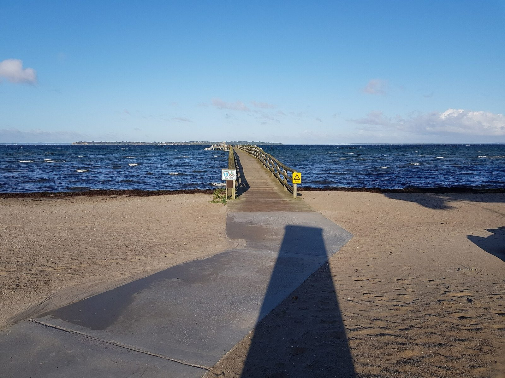
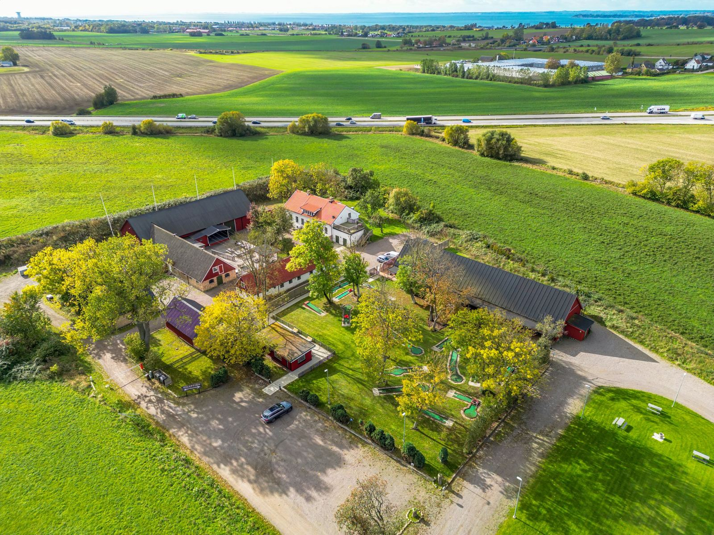

Ven
ca 10 km fino al battello
Prendi il battello dal porto di Landskrona e gira l'isola in bici. Il museo di Tycho Brahe, la distilleria di whisky e le scogliere a picco sullo stretto. Scopri di più su Ven
I dintorni
Dalla tenuta raggiungi isole, castelli, spiagge e due città in un quarto d'ora. Ecco i nostri preferiti.

ca 10 km fino al battello
Prendi il battello dal porto di Landskrona e gira l'isola in bici. Il museo di Tycho Brahe, la distilleria di whisky e le scogliere a picco sullo stretto. Scopri di più su Ven

ca 9 km
Una delle fortezze con fossato meglio conservate del Nord, con orti urbani e caffè tutt'intorno.

ca 18 km
Passeggia lungo il mare, sali sul Kärnan e mangia a Norra hamnen.

ca 22 km
Castello estivo reale con uno dei più bei parchi di rododendri d'Europa.

20 min in traghetto
Il castello di Amleto dall'altra parte dello stretto. Il traghetto parte da Helsingborg più volte all'ora.

ca 12 km
Spiaggia, villaggio di pescatori e lunghe passeggiate sull'Øresund a nord di Landskrona.
Natura, golf e attività

Dall'alto
La tenuta è circondata da campi aperti, la E6 passa proprio accanto e all'orizzonte si vede l'Øresund.
Altre foto nella galleria